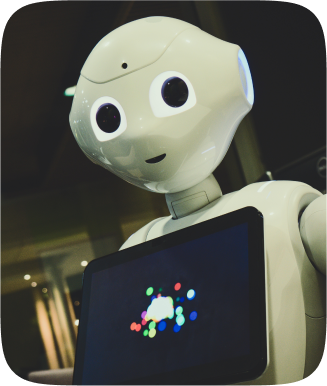

.png)
"Artificial intelligence is the relentless pursuit of knowledge and problem-solving, where the synergy of human ingenuity and machine learning converges to illuminate the path toward a smarter and more connected future."
AI and Robotics
The AIR Lab is an initiative brought to reality in VIT APUniversity and its the first of its kind in the country. Set up with the aim of learning about the latest technologies of the field like Deep Learning, Machine Learning and Robotics, the AIR Lab has given students a platform to not only learn about them but work with them to build something unique. The lab makes an ideal technology-rich environment to promote student-driven learning and provides a new approach to learning rather than the customary way. The lab has grown with more students coming in with unique ideas worth working on. With the support of the faculty, the aim is to be a place of harmony for ideas and latest technologies, and make them a reality.
.png)
THRUST AREAS
Artifical intelligence , machine vision and machine intelligence and robotics.
PROJECTS
One of the projects is T.A.R.S is a quadruped that can walk at any terrain. The main aim of the project is to leverage this technology in botanical gardens so as to monitor plant health. The other application of it being monitoring condition of the crop. T.A.R.S uses unique creep gait. It is specially programmed to mimic human and spider movement simultaneously. The program being quite small is written to have tars move over 500 steps at one Command.
MEMBERS
Dr. Hari Seetha (DIRECTOR)
Dr. Sibi Chakkaravarthy (COORDINATOR)
Dr. Sumathi D
Dr. Subhashish Mahapatra
Dr. Sukanta Nayak
Dr. Ambuj Sharma
Dr. Chandan Vishwas
Dr. Manomita Chakraborty
Dr. Reeja S R
Dr. Mehfooza Munavar Basha
Dr. Divya Meena Sundaram
Dr. Divya Meena Sundaram
Dr. Sheela J
Dr. Kuppusamy P
Dr. Venkata Lakshmi Dasari
Dr. Afzal Hussain Shahid
Dr. Monali Bordoloi